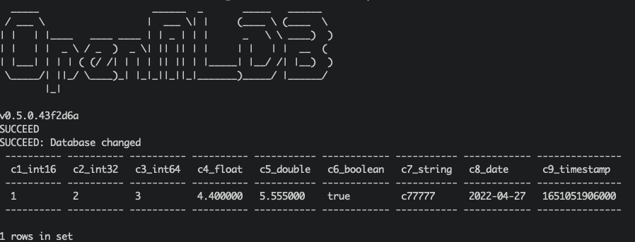

OpenMLDB Kafka Connector：接入实时数据流
Contents
OpenMLDB Kafka Connector：接入实时数据流#
简介#
Apache Kafka是一个事件流平台。它可以作为OpenMLDB的在线数据源，将实时的数据流导入到OpenMLDB在线。了解更多Kafka，请参考官网https://kafka.apache.org/。我们开发了连接OpenMLDB的Kafka Connector，可以无障碍地将Kafka和OpenMLDB连接起来。在这篇文档中，你将学习到这个connector的概念与使用方法。
注意，为了使演示更简单，本文中将使用Kafka Connect standalone模式来启动connector。该connector是完全可以用distributed模式来启动。
See also
OpenMLDB Kafka Connector实现见extensions/kafka-connect-jdbc。
概览#
下载与准备#
你需要下载kafka，请点击kafka_2.13-3.1.0。
你需要下载connector包以及依赖，请点击kafka-connect-jdbc.tgz。
你需要下载本文中所需要的配置与脚本等文件，请点击kafka_demo_files.tgz下载。
本文将使用docker方式启动OpenMLDB，所以无需单独下载OpenMLDB。并且，kafka与connector的启动，都可以在同一个容器中进行。
我们推荐你将下载的三个文件包都绑定到文件目录kafka。当然，也可以在启动容器后，再进行文件包的下载。我们假设文件包都在/work/kafka目录中。
docker run -it -v `pwd`:/work/kafka --name openmldb 4pdosc/openmldb:0.6.0 bash
流程#
使用connector的简要流程，如下图所示。我们接下来将详细介绍每一步。
整体上，使用流程可以概括为四步：
启动 OpenMLDB 并创建数据库
启动 Kafka 并创建topic
启动 OpenMLDB Kafka Connector
进行测试或者正常使用

步骤 1：启动 OpenMLDB 并创建数据库#
启动 OpenMLDB 集群#
在OpenMLDB容器中，启动集群:
./init.sh
Caution
目前只有OpenMLDB集群版可以作为sink的接收端，数据只会sink到集群的在线存储中。
创建数据库#
我们可以通过pipe快速创建数据库，而不用登录到客户端CLI：
echo "create database kafka_test;" | /work/openmldb/bin/openmldb --zk_cluster=127.0.0.1:2181 --zk_root_path=/openmldb --role=sql_client
步骤 2：启动 Kafka 并创建topic#
启动 Kafka#
解压Kafka，然后使用start脚本启动Kafka。
cd kafka
tar -xzf kafka_2.13-3.1.0.tgz
cd kafka_2.13-3.1.0
./bin/kafka-server-start.sh -daemon config/server.properties
Note
OpenMLDB服务已经使用了端口2181启动zookeeper，Kafka不用再次启动zookeeper。所以，此处只需要启动server。
你可以检查一下Kafka是否正常运行，可以使用ps或者检查日志。
ps axu|grep kafka
创建topic#
我们创建一个名为topic1的topic。注意，topic名字中尽量不要出现特殊字符。
./bin/kafka-topics.sh --create --topic topic1 --bootstrap-server localhost:9092
可以describe一下topic，确认是否正常。
./bin/kafka-topics.sh --describe --topic topic1 --bootstrap-server localhost:9092

步骤 3：启动 Connector#
首先，解压/work/kafka中的connector和kafka_demo_files包。
cd /work/kafka
tar zxf kafka-connect-jdbc.tgz
tar zxf kafka_demo_files.tgz
启动connector，需要kafka_demo_files中的两个配置文件，并将connector插件放入正确位置。
第一个配置文件是 connector 自身的配置connect-standalone.properties，重点配置是“插件目录”，如下：
plugin.path=/usr/local/share/java
Connector 以及运行它所需要的所有依赖包，都需要放入这个目录。命令如下：
mkdir -p /usr/local/share/java
cp -r /work/kafka/kafka-connect-jdbc /usr/local/share/java/
第二个配置文件是连接 OpenMLDB 的配置 openmldb-sink.properties，如下所示：
name=test-sink
connector.class=io.confluent.connect.jdbc.JdbcSinkConnector
tasks.max=1
topics=topic1
connection.url=jdbc:openmldb:///kafka_test?zk=127.0.0.1:2181&zkPath=/openmldb
auto.create=true
连接配置中，需要填写正确的openmldb url地址。该connector接收topic1的消息，并且会自动创建表(auto.create)。
下面，使用 Kafka Connector standalone 模式启动 connector。
cd /work/kafka/kafka_2.13-3.1.0
./bin/connect-standalone.sh -daemon ../kafka_demo_files/connect-standalone.properties ../kafka_demo_files/openmldb-sink.properties
确认 connector 是否启动，以及是否正确连接到 OpenMLDB 集群，可以查看 logs/connect.log，正常情况下日志应有 Executing sink task。
步骤 4：测试#
发送消息#
我们使用Kafka提供的console producer作为测试用的消息发送工具。
由于还没有创建表，我们的消息中应该带有schema，才能帮助Kafka对消息进行解析并写入OpenMLDB。
{"schema":{"type":"struct","fields":[{"type":"int16","optional":true,"field":"c1_int16"},{"type":"int32","optional":true,"field":"c2_int32"},{"type":"int64","optional":true,"field":"c3_int64"},{"type":"float","optional":true,"field":"c4_float"},{"type":"double","optional":true,"field":"c5_double"},{"type":"boolean","optional":true,"field":"c6_boolean"},{"type":"string","optional":true,"field":"c7_string"},{"type":"int64","name":"org.apache.kafka.connect.data.Date","optional":true,"field":"c8_date"},{"type":"int64","name":"org.apache.kafka.connect.data.Timestamp","optional":true,"field":"c9_timestamp"}],"optional":false,"name":"foobar"},"payload":{"c1_int16":1,"c2_int32":2,"c3_int64":3,"c4_float":4.4,"c5_double":5.555,"c6_boolean":true,"c7_string":"c77777","c8_date":19109,"c9_timestamp":1651051906000}}
更方便的，我们将上述消息保存在文件kafka_demo_files/message中，可以直接使用它。用console producer发送该消息给 Kafka。
./bin/kafka-console-producer.sh --topic topic1 --bootstrap-server localhost:9092 < ../kafka_demo_files/message
检查#
我们可以在 OpenMLDB 中查询是否插入成功。查询脚本 kafka_demo_files/select.sql，内容如下:
set @@execute_mode='online';
use kafka_test;
select * from topic1;
可以直接运行查询脚本进行查询：
/work/openmldb/bin/openmldb --zk_cluster=127.0.0.1:2181 --zk_root_path=/openmldb --role=sql_client < ../kafka_demo_files/select.sql
